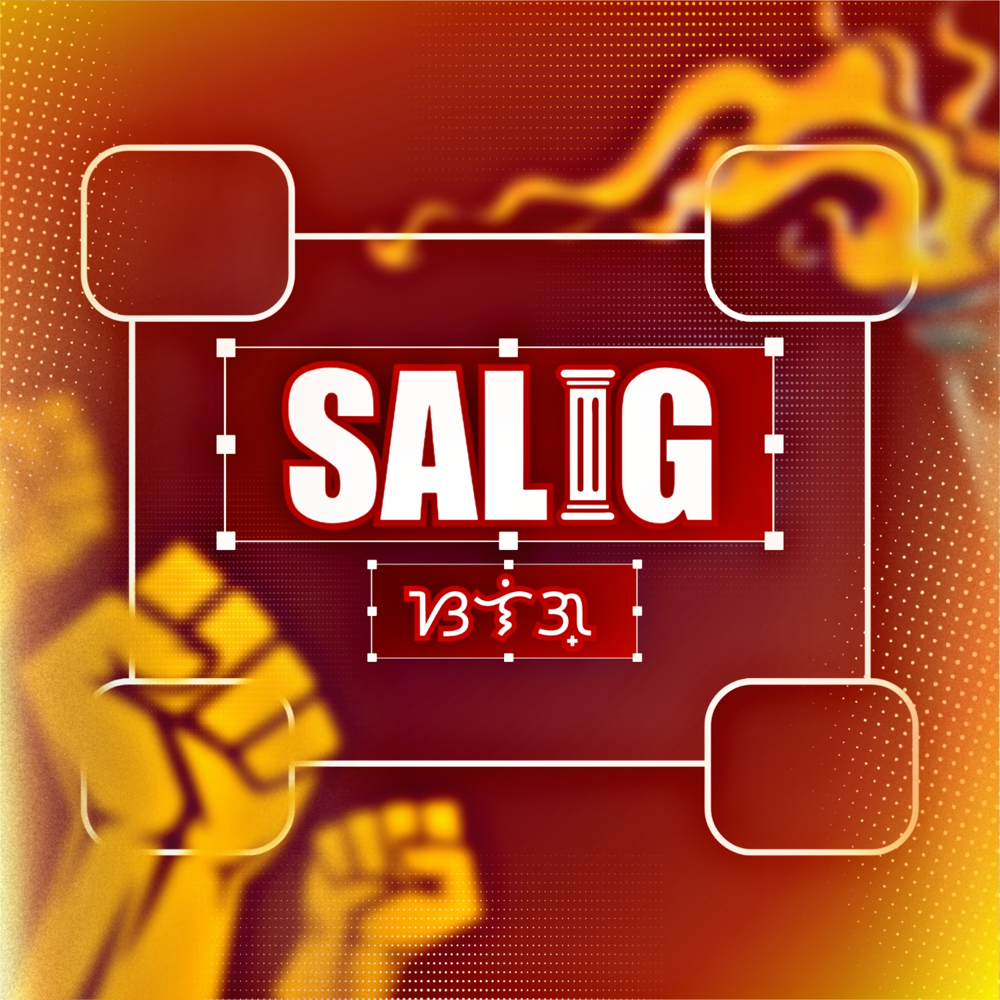
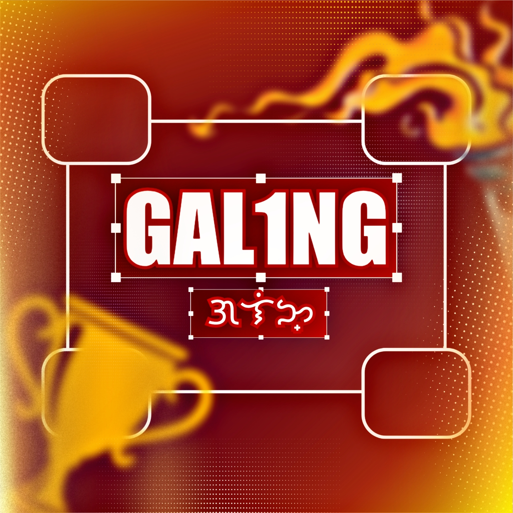

ABOUT THE SSLG
Serving the learners
of Calumpit NHS.
Learn more about the Supreme Secondary Learner Government and its role in representing the students of Calumpit National High School.
Student leadership
starts with service.
The Supreme Secondary Learner Government is a student-led organization that represents the learners of Calumpit National High School. It provides students with opportunities to participate, lead, and contribute to the school community.
OUR PURPOSE
Sinag - Salig - Lingkod - Galing
Sinag
Sisinag ang pag-asa, inspirasyon, at positibong pagbabago sa bawat mag-aaral.

Salig
Saligan ng pagkakaisa, tiwala, respeto, at matatag na paninindigan.
Lingkod
Maglilingkod nang tapat, may malasakit, at buong pusong handang tumulong.

Galing
Galing ng bawat CNHSian, kinikilala, pinauunlad, at ipinagmamalaki.
OUR COMMITMENT
For the students, by the students.
The SSLG strives to listen to the learners of Calumpit National High School and help turn meaningful ideas into action.